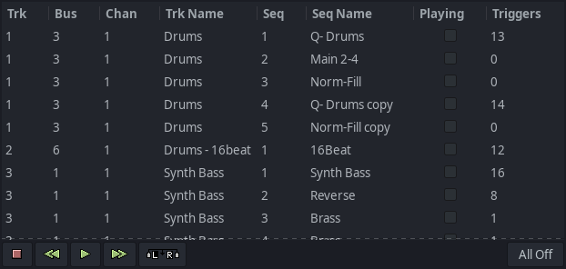
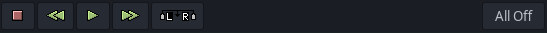

[6] Sequence List Window
Contents

The sequence list displays all sequences in the song. You can sort the list in various ways (it initializes sorted by track).
Each sequence has a checkbox you can use to toggle its
play
flag (used in live mode).
Control Edit Bar

Transport buttons Stop, Rewind, Play, Fast Forward the sequencer.
The edit button creates new triggers between L and R play markers for triggers with their “playing” box checked in the sequence list.
All Off
button will un-check all sequences playing flag.
Prev:
[5] Sequence Editor Window
Contents
Next:
[7] User Configuration File (.seq42rc)